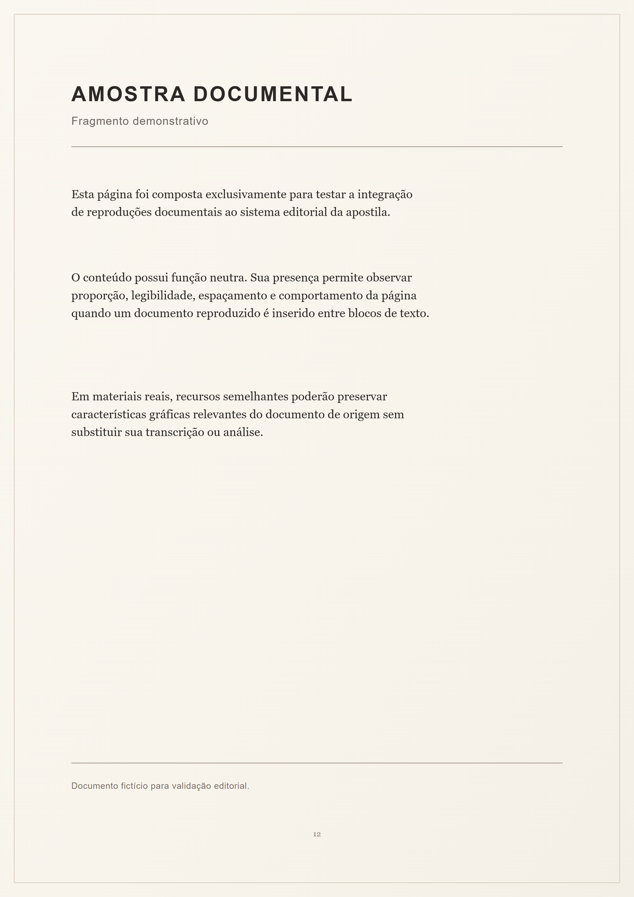

PLANO DE ESTUDO LINGUÍSTICO E DA LÍNGUA PORTUGUESA
[TÓPICO / MACROESTRUTURA]
[TÍTULO DA APOSTILA]
APOSTILA DE ESTUDO — [ANO]
Texto Teórico
· Parte I
[Título da Parte]
[Título de unidade interna]
[Insira aqui a prosa do conteúdo mestre. A Base fornece estrutura,
identidade e paginação; o conteúdo concreto permanece determinado pela apostila.]
Uma transcrição fonética pode usar
[ˈliŋɡwɐ], enquanto um símbolo técnico pode usar
→ sem alterar a tipografia global da prosa.
[Pequena unidade]
[Citação genérica sem tratamento temático automático.]
Recurso vetorial demonstrativo para validação da integração editorial.
[Unidade composta atômica]
[Agrupe somente quando a dependência interna justificar que a unidade permaneça inteira.]
Texto Teórico
· Parte II
[Título da Parte]
[Integração de recurso raster]
[Este trecho fornece apenas contexto editorial suficiente para verificar a convivência
entre prosa, tabela e imagem raster dentro da mesma página.]
| [Cabeçalho A] |
[Cabeçalho B] |
| [Dado] |
[Dado] |
| [Dado] |
[Dado] |
Imagem raster demonstrativa utilizada exclusivamente para validação editorial.
Texto Prático
Exemplos Resolvidos
[Exemplo Resolvido]
[Primeira unidade interna do exemplo, usada para verificar a continuidade estrutural.]
[Segunda unidade interna. O contêiner pode continuar entre páginas apenas pelos filhos diretos.]
[Terceira unidade interna, ainda curta, destinada a criar uma situação realista de ocupação da página.]
[Quarta unidade interna, mantendo o teste de paginação sem transformar a Base em conteúdo fictício extenso.]
[Quinta unidade interna, acrescentada apenas para aproximar o visual seguinte do limite útil da página.]
[Sexta unidade interna, destinada a verificar se um recurso indivisível é deslocado em vez de reduzido.]
[Sétima unidade interna, encerrando o contexto mínimo necessário para o teste de passagem de página.]
[Oitava unidade interna, mantendo apenas a ocupação necessária para aproximar o recurso do limite inferior.]
[Nona unidade interna, usada para confirmar que o visual será transferido inteiro quando o espaço restante for insuficiente.]
[Recurso documental]
[O fac-símile abaixo testa um objeto raster vertical com proporção documental e legenda externa.]

Fac-símile fictício utilizado exclusivamente para validação da integração de recursos documentais.
Texto Prático
Gabarito Comentado
[Subunidade do gabarito]
[Item]
[Resposta demonstrativa curta, mantida em unidade atômica para validação do agrupamento.]
- [Primeiro critério.]
- [Segundo critério.]